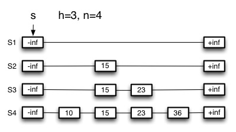
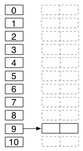
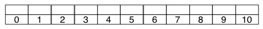

This week's problems focus on ensuring you understand the operations of the main data structures. They are not conceptually difficult but require dilligence in execution. Don't be careless or just go on intuition: you should actually follow the algorithms and hash functions precisely, or you will go wrong.
(1) Please list the names of the other members of your peer group for this week and the number of extra credit points you think they deserve for their participation in group work on Tuesday and Thursday combined.
Please read carefully; this has multiple parts. Answer the lettered parts in boldface.
Here is a skip list, including instance variables s (the starting
position), h (the height: we assume that h starts counting from 0), and
n (the number of keys currently stored in the skip list). We won't bother
to show the data associated with the keys. The double lines in the graphic are
meant to remind you that these are doubly linked lists in both the horizontal
and vertical directions, but you need not draw double lines in your responses.

(2) _Trace the path that SkipSearch(36) takes, by circling every node that p is assigned to as the SkipSearch algorithm executes, starting with s. _
In the remaining questions, you will how what the skip list shown above looks
like after the cumulative operations indicated below, using the pseudocode for
SkipInsert and SkipSearch in the lecture notes, and your understanding of
how SkipDelete works from the class activity.
Since this is a random algorithm and we want everyone to have the same answer
to facilitate grading, I also give you sequences of random numbers (not all of
which will be used, as I am testing your understanding of when and how the
random numbers are used). Note that the insertion code says while
random(0,1) ≤ 1/2 do...
The operations are cumulative: each step builds on the result of the previous one. Redraw the entire data structure after each operation, and also update instance variables s, h and n as needed.
(3) Redraw after SkipInsert(19,data) where random(0,1) returns .70, .94, .14, .11, .89, ...
(4) Redraw after SkipInsert(53,data) where random(0,1) returns .14, .51, .22, .68, .45, ...
(5) Redraw after SkipInsert(32,data) where random(0,1) returns .25, .39, .18, .97, .02, ...
(6) _ Redraw after SkipDelete(SkipSearch(15)). _
_Something to think about (but not graded): What should the list look like if we now deleted 32? There is a choice to be made here that we have not discussed! _
(7) Now draw what an _empty skip list would look like, including s, h and n._
(8) Show the table that results when 20, 51, 10, 19, 32, 1, 66, 40 are cumulatively inserted into an initially empty hash table of size 11 with chaining and **h(k) = _k mod 11.**_ Draw this one with a vertical table indexed from 0 to 10, and linked lists going off to the right, as shown.

(9) Show the table that results when 20, 51, 10, 19, 32, 1, 66, 40 are cumulatively inserted into an initially empty hash table of size 11 with linear probing and
h'(k) = k mod 11
h(k,i) = (h'(k) + i) mod 11
Draw this and the next result as horizontal arrays indexed from 0 to 10 as shown below. Show your work to justify your answer to the next question!

(10) How many re-hashes after collision are required for this set of keys? _ Show your work here so we can give partial credit or feedback if warranted._
(11) Show the table that results when 20, 51, 10, 19, 32, 1, 66, 40 are cumulatively inserted into an initially empty hash table of size _m = 11 with double hashing_ and
h(k,i) = (h1(k) + ih2(k)) mod 11
h1(k) = k mod 11
h2(k) = 1 + (k mod 7)
Refer to the code in the book for how i is incremented. Show your work to justify your answer to the next question!
(12) How many re-hashes after collision are required for this set of keys? Show your work here so we can give partial credit or feedback if warranted.
(13) Open addressing insertion is like an unsuccessful search, as you need to find an empty cell, i.e., to not find the key you are looking for! If the open addressing hash functions above were uniform hashing, _ what is the expected number of probes at the time that the last key (40) was inserted?_ Hints: At that point, 7 keys are in the table. Use the theorem for unsuccessful search in open addressing. Answer with a specific number, not O or Theta.